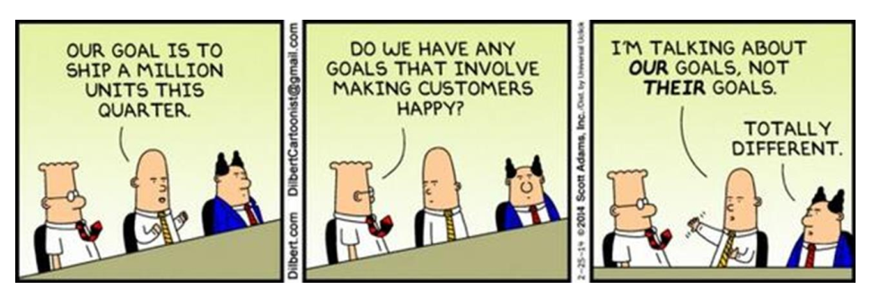
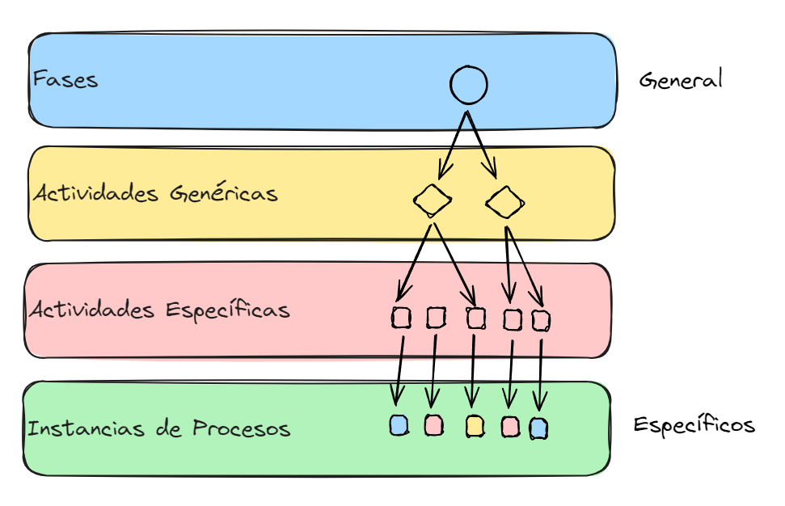
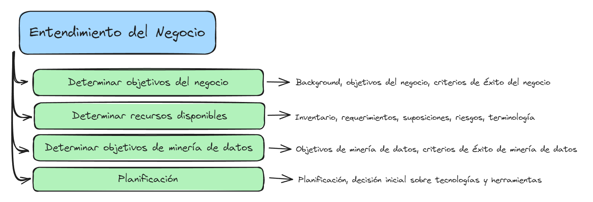
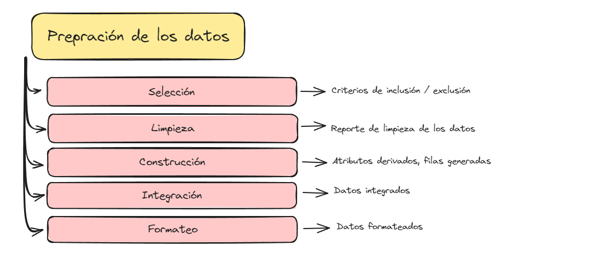
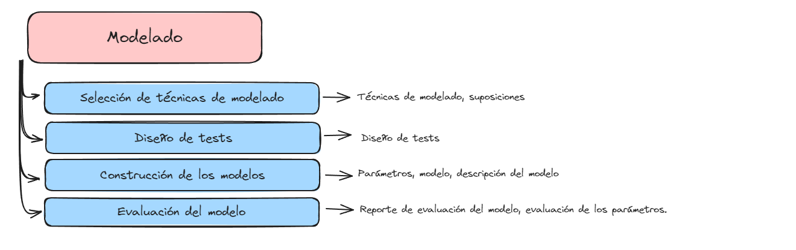
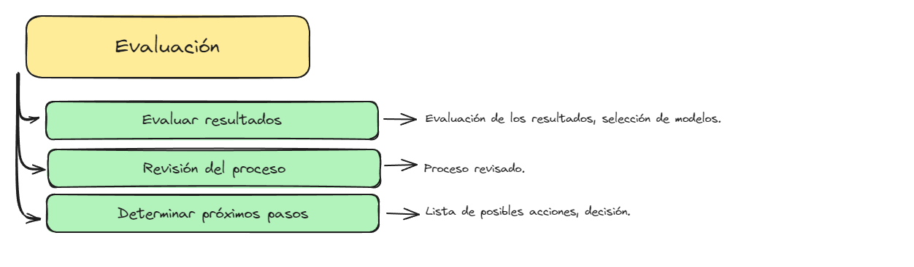
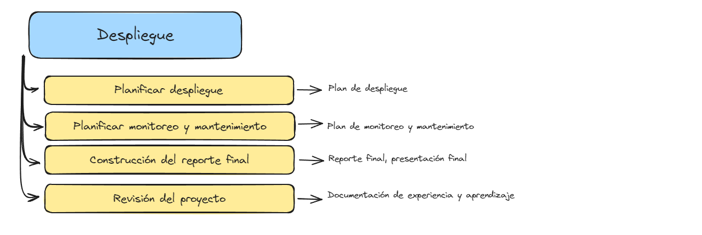

Clase 2: CRISP-DM#
Cross Process Industry Standard Process for Data Mining
Giovanni D. Rottoli, PhD.
Contexto#
Datos, datos y más datos#
En la actualidad, la sociedad está datificada: los datos se están generando de forma masiva, a grandes velocidades, en múltiples formatos distintos, en una multiplicidad de escenarios.
Son estas características, el volumen, la velocidad y la variedad, las que describen al fenómeno conocido como Big Data.
Aprovechar estos datos para la toma de decisiones resulta una tarea crucial.
Herramientas#
La minería de datos hace referencia a los algoritmos que son utilizados para explorar el conjunto de datos y encontrar regularidades o patrones implícitos en los mismos.
Estos algoritmos y métodos, basados en estadísticas, inteligencia artificial, aprendizaje automático y visualizaciones, nos permiten analizar bases de datos que resultan desproporcionadas para el análisis manual, siendo escalables para adaptarse a las necesidades asociadas al Big Data.
Recordemos la crisis del Software#
Los proyectos de software fallaban debido a que la actividad de la industria se enfocaba en la generación de código sin asegurar la calidad de las producciones.
La cantidad de código sin gestionar se tornaba inmanejable.
Ingeniería de Software#
La crisis del software dio origen a la Ingeniería de Software en 1980.
Esta se define como la aplicación de un enfoque sistemático, disciplinado y cuantificable al desarrollo, operación y mantenimiento de software.
Gestión de proyectos de Ciencia de Datos#
De forma análoga, la aplicación apresurada de algoritmos de minería de datos sin considerar actividades de gestión de recursos conllevaría a no dar respuesta a las necesidades de los stakeholders de manera satisfactoria.

Knowledge Discovery on Databases#
El proceso KDD fue diseñado en el año 1996 por Fayyad y otros.
Marco metodológico para la aplicación de algoritmos de minería de datos.
Propone una diferencia conceptual entre Minería de Datos y Descubrimiento de Conocimiento.
Vamos por partes:
#
Fayyad et al. (1996). The KDD Process for Extracting Useful Knowledge from Volumes of Data. COMMUNICATIONS OF THE ACM 39.11. https://sceweb.uhcl.edu/boetticher/ML_DataMining/p27-fayyad.pdf

Pasos#
Selección: A partir de datos del dominio, se selecciona un subconjunto de ellos que serán utilizados para abordar el problema.
Preprocesamiento: se limpian los datos de errores, anomalías, ruido, y se toman decisiones sobre datos perdidos.
Transformación: Se seleccionan atributos relevantes, se reduce la dimencionalidad, se codifican los atributos, se crean atributos derivados, etc.
Minería de datos: Se deciden los modelos a crear, se seleccionan los algoritmos a aplicar, se decide el valor de los parámetros y finalmente se ejecutan sobre los datos.
Evaluación: Se interpretan los resultados y se decide si las métricas de eficiencia son adecuadas. Se descartan los patrones triviales e irrelevantes.
Pros y Contras#
Pros:#
Simple de comprender
Simple y rápido de implementar
Sistematiza el proceso de aplicación de algoritmos.
Contras:#
Modelo en cascada
No contempla el análisis del dominio.
No se evalúa en función de los problemas de dominio.
Orientado a la aplicación de algoritmos.
CRISP-DM#
Cross Industry Standard Process for Data Mining#
Publicado en el año 1999 como un proyecto Europeo.
El proceso fue llevado adelante por 5 grandes compañías privadas a partir del año 1996.
Se integran las experiencias de múltiples empresas alrededor del mundo.
Diseñado como una metodología estandar para el proceso de ciencia de datos.
Ciclo de Vida#
Ciclo de vida iterativo-incremental.
6 fases bien definidas.
Retroalimentaciones entre fases.

Estructura#
Estructura jerárquica.
Cada nivel posee distinto grado de abstracción.
Busca que el proceso sea replicable y se fundamenten todas las decisiones tomadas.

Pros y Contras#
Pros#
General: Es suficientemente general para distintos dominios de aplicación.
Sencillez para su adopción: Se puede implementar sin demasiado entrenamiento o incluso, sin definir roles específicos.
Entendimiento del negocio: Al partir de problemas bien definidos, aumenta la probabiliadd de éxito de los proyectos.
Finalización: Posee una fase de implementación que permite definir cómo utilizar el conocimiento adquirido y cuáles son los próximos pasos.
Flexible: Se puede adaptar según las necesidades particulares de cada equipo. Incluso existen variantes ágiles.
Incremental: el conocimiento adquirido durante la ejecución de un proyecto es útil para futuras iteraciones.
Contras#
Rigidez: Puede degenerarse en un proceso cascada.
Documentación: Casi todas sus actividades requieren documentación. Esto puede ser clave en procesos maduros, pero no resulta deseable en equipos ágiles.
Anticuado: Se argumenta que crisp-dm es un proceso que no tiene en cuenta el BIG DATA y la necesidad de actualizar constantemente los modelos.
Finalización: Posee una fase de implementación que permite definir cómo utilizar el conocimiento adquirido y cuáles son los próximos pasos.
Gestión de proyectos: Está diseñado para equipos pequeños, por lo que no posee actividades de coordinación de equipos y recursos.
Fases#
Entendimiento del Negocio#

Entendimiento de los Datos#

Preparación de los Datos#

Modelado#

Evaluación#

Implementación o despliegue#

Fuentes a consultar:#
*The CRISP-DM Process Model. Discussion Paper. 1999: https://www.keithmccormick.com/wp-content/uploads/CRISP-DM No Brand.pdf